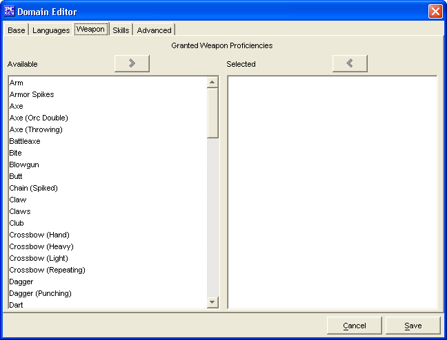

The Weapons Tab is used to add the ability to use weapons not normally available to clerics to a priest who selects the domain being created.
The two Granted Weapon Proficiencies windows, Available and Selected are used to create a list of weapon proficiencies which the domain grants.
The Cancel and Save buttons, which appear on every tab, are used to either cancel the domain creation or save it to the customDomains.lst file.